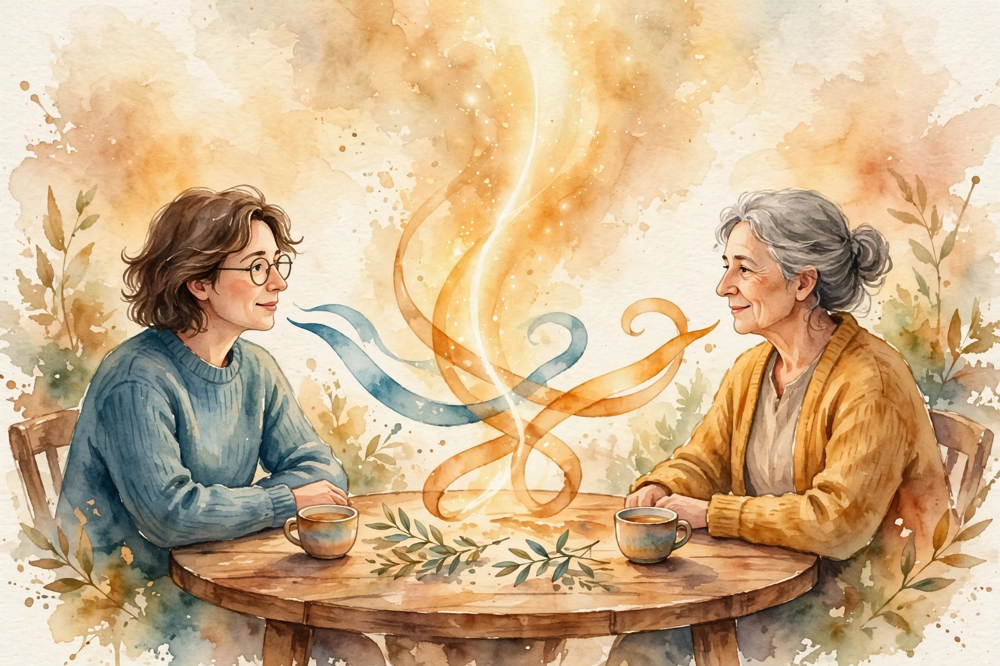

You Are Not So Smart · Episode 009 · Interactive Companion
Arguing
Hugo Mercier on the argumentative theory of reason. Reason is not a broken truth finder. It is a working argument machine run in the wrong setting. Put it back in a group and the flaws become features.
← Track index · Episode chapter →

Illustration. Watercolor-style image generated for this page. Two figures trade ribbons of speech that merge into one stream. Not a photograph.
The Wisdom Index: every nugget in this companion
Part 1
The Theory in One Paragraph
SOURCEIn 2011, Hugo Mercier and Dan Sperber published Why do humans reason? Arguments for an argumentative theory. The claim: humans evolved reason for two jobs, produce arguments and evaluate arguments. Arguing exists to overcome trust bottlenecks. Someone tells you something and you do not take it on trust. Argumentation lets them convince you without force.
SOURCEFirst the cleanup. Arguing has two meanings in English: the nasty shouting fight, and the exchange of reasons. The theory covers only the second. Nobody prescribes shouting.
If everybody was deaf, people would stop talking.
Hugo Mercier, in the interview
SOURCEThe line is the stability proof. If arguments never changed minds, arguing would die out. We still argue, so minds still change, so the device works often enough to survive.
INTERPRETATIONThe reframe for the reader: stop asking why your reason fails alone. It was never built for alone. Solo deliberation is the off label use. The native habitat is the group.
Nugget
The two settings
What happened. SOURCESolo, reason generates support for the existing belief. In a group, the right side tends to convince the wrong side.
Why it matters. INTERPRETATIONConfirmation bias looks like a flaw only if reason is a solo truth device. It is a team device.
The principle. INTERPRETATIONMove consequential decisions out of solo deliberation and into structured disagreement.
Part 2
Why Solo Reasoning Fails
SOURCEAlone, you have no sounding board. Nobody tells you other views exist, your arguments are weak, or counterarguments stand ready. So you collect reasons for your side and stop. The result is not neutral. You grow more polarized and more confident. The conventional advice, think carefully alone before deciding, goes against the grain of the machinery.
SOURCEWhen the New York Times covered the theory, the headline read: reasoning evolved to win arguments. Mercier says that is half the claim. The other half is evaluation. You cannot win an argument unless someone can lose one, and losing often means gaining a better belief. Production without evaluation is noise. Evaluation without production is silence.
SOURCEMercier resists calling the production side flawed. A bias is not automatically a defect. A mushroom rule should be biased toward calling the mushroom poisonous. Better to skip a fine mushroom than to eat a lethal one. Confirmation bias looks terrible in a lone truth seeker and optimal in an arguer. Offer a weak reason. If it lands, done. If not, the other person supplies the counter, and you answer that.
SOURCEHis restaurant example: you want a friend to try a Japanese place. Their objections could be many: dislike, price, fatigue. You cannot list them all. So you say it is a good restaurant, they say they dislike Japanese food, and you say they serve Thai too. The division of cognitive labor does the work neither mind could do alone.
INTERPRETATIONThe team version: split every hard proposal into production and evaluation across people. You produce. A named skeptic evaluates. Nobody grades their own draft alone.
Nugget
The division of labor
What happened. SOURCEMercier shows one mind cannot anticipate every objection, so the group splits the work: you offer, they counter, you answer.
Why it matters. INTERPRETATIONAnticipating everything yourself is uneconomical and painful. Let them find your flaws.
The principle. INTERPRETATIONLead with your weakest reason. Answer real objections, not imagined ones.
Part 3
Reason Optimizes for Justifiability
SOURCEWhen no strong prior intuition exists, reason does not weigh objectively. It picks the most easily justifiable option, which is often not the best one. The chocolate study: participants choose between a small cheap heart shaped chocolate and a bigger expensive roach shaped one. Asked which they would enjoy more, most say the heart. Asked which they pick, most pick the roach. It is rational to pick the biggest most expensive thing is an available justification. Disgust is true but hard to defend. So they choose the chocolate they expect to enjoy less.
SOURCEThe disjunction effect, in numbers. Flip a coin. Heads, you win 200 dollars. Tails, you lose 100. Then you are offered a second flip. Winners take it. Losers take it. But when the first outcome stays hidden, most people decline. The second flip pays 200 with probability one half and loses 100 with probability one half. Expected value: plus 50 dollars. Refusing it forfeits 50 dollars of expected value. The winner's reason and the loser's reason cannot merge into one clean story, so with no single justification, the machinery declines.
The fifty dollar flip
Hover any bar for detail. The arithmetic says flip. The story says wait.
Source: Mercier interview, ep009, via the track chapter. Original toy chart built from episode claims.
SOURCEThe Hawaii version, from the same literature: students may buy a discounted Hawaii trip after an exam. Told they passed, they buy it as a reward. Told they failed, they buy it as consolation. Told nothing, they buy nothing. Two opposite reasons, no single justification, no purchase.
SOURCEMercier reframes the sunk cost fallacy the same way. The driver is the pressure to justify. Quitting means admitting past spending was waste, which is hard to justify, so people keep spending. Children feel less justification pressure and fall for it less. Give people a valid justification for quitting and they quit.
INTERPRETATIONThe chocolate question for your next choice: am I picking this because it is best, or because it is easiest to defend? Write both answers. When a decision stalls for lack of a clean reason, compute the expected value directly and trust the arithmetic.
Nugget
The fifty dollar flip
What happened. SOURCEPeople refuse a plus 50 dollar expected value flip when the first outcome is hidden, because no single story justifies it.
Why it matters. INTERPRETATIONReason needs a story. Arithmetic does not. The story tax is real money.
The principle. INTERPRETATIONWhen the story stalls, run the numbers. Justifiability is not quality.
Part 4
The Bat and the Ball
SOURCEThe demonstration: a bat and a ball cost 1.10 dollars together. The bat costs 1.00 dollar more than the ball. How much does the ball cost? Intuition says 10 cents. Check it: 0.10 plus 1.10 is 1.20, not 1.10. Wrong. The answer is 5 cents: 0.05 plus 1.05 is exactly 1.10. Solo, most people answer 10 cents, then reason their way into defending it. Reason finds reasons for the wrong intuition.
Ten cents is wrong
Hover any bar for detail. The arithmetic is checkable. The intuition is not.
Source: Mercier interview, ep009, via the track chapter. Original toy chart built from episode claims.
SOURCEPut people in a group and the picture changes. If one person got it right, that person can always convince the rest, usually after 5 to 10 minutes of argument. The critical detail: telling does not work. Saying the answer is 5 cents changes nothing. People must be argued into it. The arguer's production and the group's evaluation do jointly what neither does alone.
SOURCEMercier closes with the hopeful history: the abolition of the slave trade in Britain. Fully legal in the late 18th century, fully outlawed decades later, with arguments doing critical work on Parliament along the way. His internet optimism runs the same logic. Critics saw the printing press and warned of astrology flooding the world. The panic looks ridiculous now. The internet adds two way argument to print's one way broadcast, and more argument means more truth winning, slowly.
INTERPRETATIONMercier's summary line for the whole episode: “to reason well, it is much more important to be in the right context, than to be a good reasoner.” Staff the evaluation side, not just the production side. A genius alone loses to an ordinary person in a good argument.
Nugget
Telling fails, arguing converts
What happened. SOURCEStating the 5 cent answer converts nobody. Five to ten minutes of argument converts almost everybody.
Why it matters. INTERPRETATIONLecturing the answer counts as telling. If they cannot argue it, they do not have it.
The principle. INTERPRETATIONReplace verdicts with structured disagreement. Truth wins in groups.